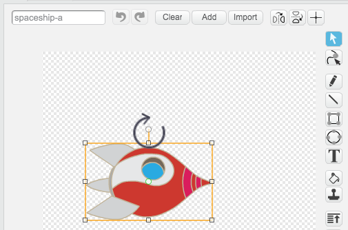

In this project, children will learn how to combine code blocks to create a simple animation.
Resources
For this project, Scratch 2 should be used. Scratch 2 can either be used online or offline.
You can find a completed version of this project online, or it can be downloaded by clicking the ‘Download Project Materials’ link for this project, which contains:
LostInSpace.sb2
Learning Objectives
Sprites;
Sequential code blocks;
Events;
Loops:
Repeat loops;
Forever loops.
Challenges
“Adding another sprite” - adding a sprite to a project;
“Improving your animation” - altering the numbers in a short program;
“Make your own animation” - applying the learning to make a new animation.
Frequently Asked Questions
Children may need reminding to ‘reset’ a sprite’s position, size and other effects at the start of their animation. This can be easily achieved by adding some of the following blocks to the start of their animations:
go to x:(0) y:(0)
set size to (100)%
clear graphic effects
The ‘spaceship’ sprite will move sideways unless it is rotated 90 degrees clockwise. Rotating the spaceship is part of the project instructions, but another sprite can be substituted for the spaceship if this is causing problems.
screenshot
Hi there!
Seems like this is your first time here. Would you like a tour?